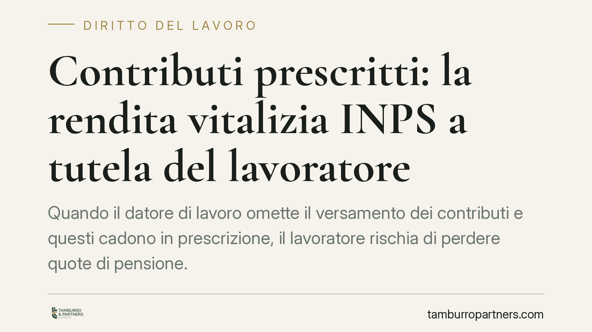

Contributi prescritti: la rendita vitalizia INPS a tutela del lavoratore
Quando il datore di lavoro omette il versamento dei contributi e questi cadono in prescrizione, il lavoratore rischia di perdere quote di pensione. La legge, però, prevede un rimedio: la rendita vitalizia INPS ex art. 13 della L. 1338/1962. Una recente pronuncia del Tribunale di Rovigo chiarisce quali prove servono per ottenerla e con quali limiti.

Il caso e perché conta
I contributi previdenziali si prescrivono. Trascorso il termine di legge (oggi cinque anni per la generalità dei rapporti), l'INPS non può più incassarli e il datore inadempiente non può più regolarizzare. Il lavoratore, che nulla ha potuto fare, si troverebbe così con un buco nella propria posizione assicurativa e una pensione più bassa.
Per evitare questo esito, l'ordinamento mette a disposizione uno strumento specifico. Il Tribunale di Rovigo, Sezione Lavoro, è tornato di recente sul tema, precisando il regime probatorio necessario per accedervi. È un punto tecnico, ma con ricadute concrete su chiunque abbia lavorato "in nero" o con versamenti irregolari ormai non più recuperabili.
Inquadramento normativo
Lo strumento è la rendita vitalizia riversibile prevista dall'art. 13 della Legge 12 agosto 1962, n. 1338. La norma consente al datore di lavoro (o, in sua vece, al lavoratore) di costituire presso l'INPS una rendita che copre il periodo di contribuzione ormai prescritto, mediante il versamento di una riserva matematica calcolata dall'Istituto.
In sostanza: si "ricomprano" i contributi perduti. Se il datore non provvede, il lavoratore può anticipare la somma e poi agire in rivalsa nei confronti dell'obbligato inadempiente per il risarcimento del danno.
Il punto delicato, ribadito dalla giurisprudenza, riguarda la prova. La legge richiede che l'esistenza del rapporto di lavoro sia dimostrata con documenti aventi data certa (buste paga, dichiarazioni fiscali, corrispondenza, atti di data certa). Non basta, cioè, la sola testimonianza per provare che il rapporto sia esistito.
Diverso il discorso per la durata del rapporto e per la retribuzione percepita: questi elementi, una volta acquisita la prova documentale del rapporto, possono essere accertati anche in via presuntiva e per testimoni. È una distinzione decisiva, perché alleggerisce l'onere sugli aspetti che spesso non risultano da alcun documento scritto.
Implicazioni pratiche
Per il lavoratore la conseguenza è chiara: senza almeno un documento che ancori l'esistenza del rapporto, la domanda di rendita vitalizia è destinata al rigetto. La sola prova orale non regge.
Chi conserva una busta paga, un contratto, una comunicazione scritta del datore o documentazione fiscale ha una base solida. Su questa base potrà poi ricostruire, con testimoni e presunzioni, per quanto tempo ha lavorato e con quale retribuzione, così da quantificare la rendita.
Per il datore di lavoro, la pronuncia conferma l'esposizione a un'azione di rivalsa: anche a distanza di anni, l'omissione contributiva può tradursi in un obbligo risarcitorio pieno verso il dipendente che abbia anticipato la riserva matematica.
Cosa fare in concreto
- Recuperate subito la documentazione scritta del rapporto: buste paga, contratto, lettere, e-mail, dichiarazioni fiscali (CU, 730, Unico) e movimenti bancari degli stipendi.
- Verificate l'estratto conto contributivo INPS per individuare con precisione i periodi scoperti e accertare l'avvenuta prescrizione.
- Raccogliete elementi su durata e retribuzione: nominativi di colleghi e clienti come testimoni, orari, mansioni, ogni indizio utile a ricostruire il rapporto.
- Presentate all'INPS la domanda di costituzione della rendita ex art. 13 L. 1338/1962, valutando l'anticipo della riserva matematica per poi agire in rivalsa.
- Fatevi assistere prima di agire in giudizio: la valutazione della data certa dei documenti e la strategia probatoria incidono direttamente sull'esito.
In sintesi
La rendita vitalizia non è un automatismo: presuppone un rapporto di lavoro provato per iscritto e contributi ormai prescritti. Ma è un rimedio effettivo, che consente di non subire in via definitiva le conseguenze dell'inadempimento altrui. La cura nel reperire e ordinare la documentazione, prima ancora del contenzioso, fa spesso la differenza tra un diritto riconosciuto e uno perduto.
---
*Contributo informativo a cura di Tamburro & Partners - Avv. Giuseppe Tamburro. Non costituisce parere legale.*
Ogni storia di lavoro ha i suoi tempi.
Se gestisci HR e vuoi un confronto su contenzioso, ispezioni o licenziamenti, scrivi allo studio. Ti rispondiamo entro un giorno lavorativo.